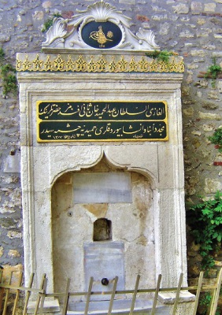

Dünyadan son nasibi olan ecel şerbetini içen mahkûm ölümün bütün soğukluğunun duvarlarına sindiği korkunç zindandan çıkarılır, Topkapı Sarayı’nın birinci kapısı olan Bâb-ı Hümayun’la, ikinci kapısı olan Bâb-üs Selâm arasında bulunan Cellât Çeşmesi’nin önüne getirilirdi. Sonra da başı çeşmenin önündeki taşın üzerine konularak, Bostancıbaşı’nın da gözetiminde, Cellâtbaşı’nın güçlü bir kılıç darbesiyle idam edilirdi. İnfaz gerçekleştikten sonra cellâtlar kanlı palalarını, satırlarını bu çeşmede yıkadıkları için çeşmeye Cellât Çeşmesi denmişti. Bir diğer adı da siyasi mahkûmların infazı burada gerçekleştiğinden dolayı “Siyaset Çeşmesi” idi. Cellâtlara ise “Meydan-ı Siyaset Ustası” denirdi bir dönem. Bazen de mahkûm Balıkhane Kasrı’nda şerbetini içer içmez kementle boğularak öldürülür, cesedi de ayağına taş bağlanılarak denize atılırdı. Başı kesilerek öldürülenlerin kesik başı, çeşmenin önünde ve karşısında bulunan Seng-i İbret (İbret Taşı) adındaki sütunların üzerine ya da Bâb-ı Hümayun’un nişlerine konur, üç gün bekletildikten sonra, başsız cesedi gibi kellesi de denize atılırdı. Yabancı gezginler Sarayburnu açıklarından gemiyle geçerlerken, denizin yüzünde böyle nice başsız cesetlere rastladıklarını yazmışlardı. Cellât Çeşmesi Sultan II. Abdülhamit tarafından Alman İmparatoru Kayzer II. Wilhelm’in görmemesi için, imparatorun 1898’deki İstanbul ziyareti sırasında kaldırılmış, yerine Hamidiye Çeşmesi dikilmiştir.

Topkapı Sarayı, orta kapı yanındaki ünlü Cellat Çeşmesi